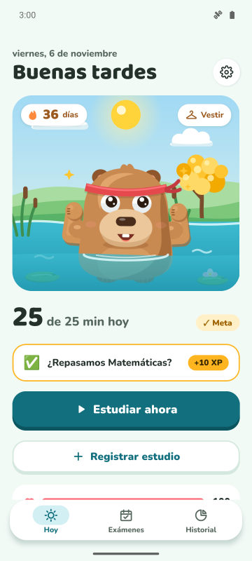
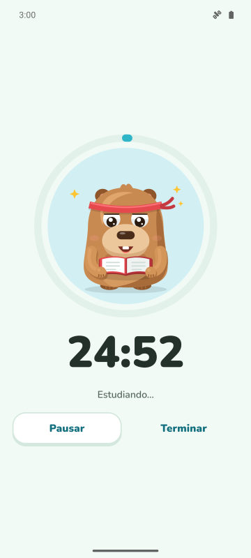
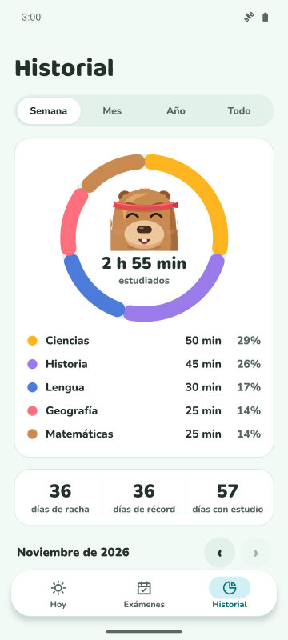
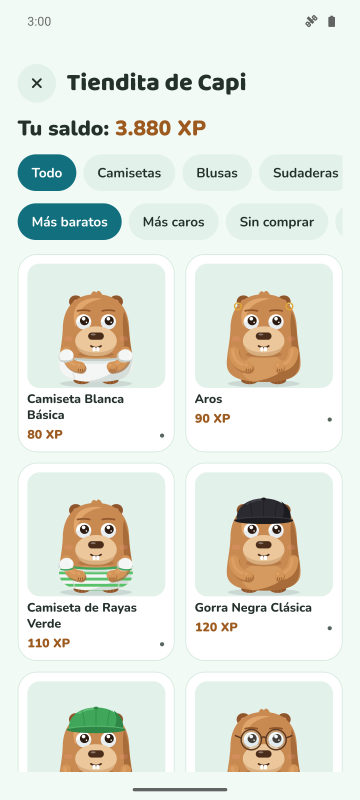

Meta diaria y racha
Elige cuántos minutos estudiar al día. Si lo cumples, la racha sube y tu capibara lo celebra.
Temporizador de concentración, racha diaria y cuenta atrás para los exámenes. Cuanto más estudias, más feliz y fuerte se pone tu capibara.
Muy pronto en Google Play
Gratis para Android. iPhone más adelante.

Elige cuántos minutos estudiar al día. Si lo cumples, la racha sube y tu capibara lo celebra.
Temporizador con tres modos. En el Modo Protegido, la capibara aparece sobre las apps que quieres evitar.
Añade tu examen y mira los días que faltan. Cada día recibes una misión con la materia que más lo necesita.
Gana XP estudiando y cámbialo por ropa y accesorios. También celebra fechas especiales y tu cumpleaños.



Sí. La app es gratis con anuncios. Premium (opcional) quita los anuncios y desbloquea el Modo Protegido, silenciar notificaciones al concentrarte y 3 protectores de racha al mes.
No. Tus datos se quedan en tu móvil. Si quieres, puedes sincronizarlos con tu propio Google Drive.
Sí. Añade la fecha del examen, sigue la cuenta atrás y recibe recordatorios 7, 3 y 1 día antes.
En Forest plantas árboles. En CapyFoco cuidas una capibara que crece con tu estudio, con racha diaria, metas y cuenta atrás para exámenes en una sola app.
Por ahora solo Android. La versión para iPhone está en los planes.